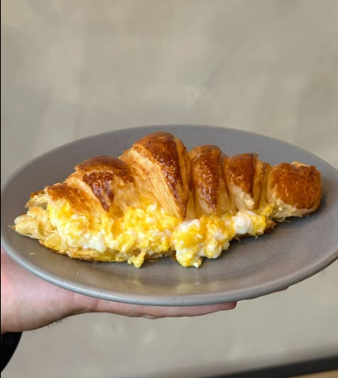
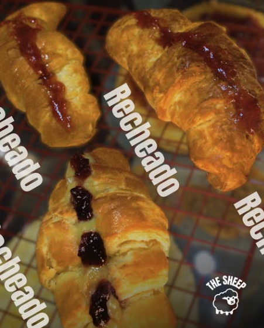

Folhados
Nossa dedicação à massa folhada aparece em cada fornada — camadas bem definidas, crocância por fora e maciez por dentro.

Croissant Tradicional
O nosso delicioso croissant, com a massa folhada feita na casa

Croissant Cremoso
O tradicional croissant da casa, acompanhado de ovos cremosos com requeijão

Croissant Frutas Vermelhas
Croissant recheado com uma creme branco e geleia de frutas vermelhas da casa.